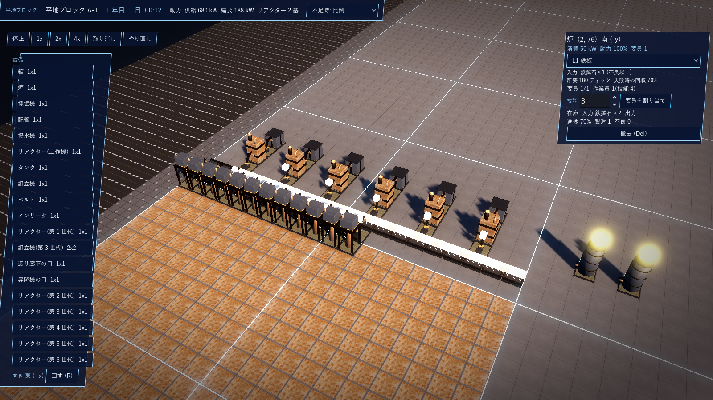
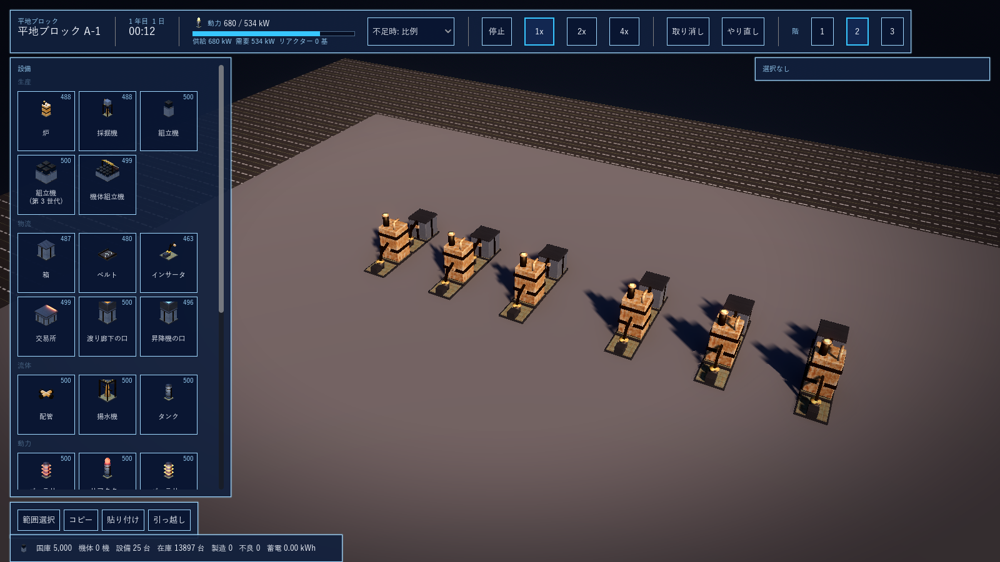
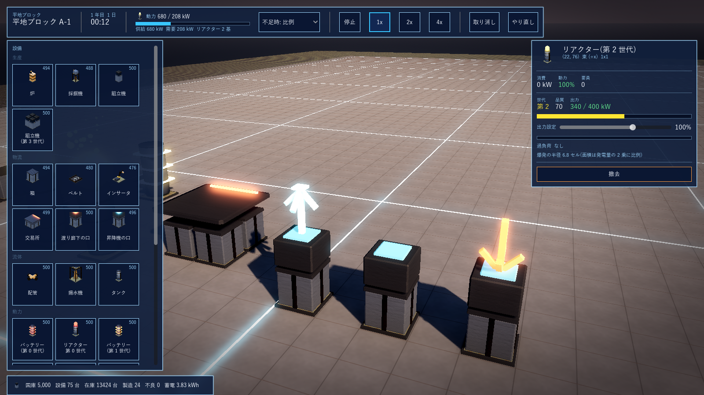
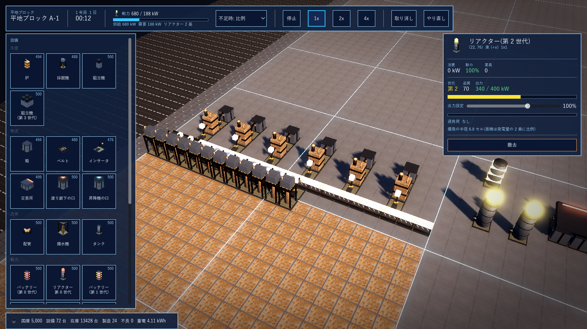

G13 手順2 工場の核: 実装記録
2026-10-15 に G1 から分離。第 1 段階(計算の核)と第 2 段階(編集画面・集計近似・バッテリー・輸出入・製造ロボット・設計図・過負荷)。
1. 手順2 第 1 段階の実装(2026-10-15 完了)
承認した範囲をエンジン非依存の sim/GPS.Sim に実装し、xunit 19 件(既存 6 + 工場 13)が全て通る。
| 区分 | 内容 | ファイル |
|---|---|---|
| 時計と乱数 | 60 ティック/秒、1 時間 = 18,000 ティック、1 年 = 360 日。乱数は xorshift64*(状態を保存) | Rng.cs |
| アイテムと品質 | 品質値 0〜100 を 1 個ずつ持つ。階級は 不良 0〜39 / 通常 40〜89 / 高 90〜98 / 最高 99〜100。製造時に率(最高 0.1%・高 1%・不良 8.9%)で階級を引き、階級内の値を一様に決める。率は設備・レシピ・担当者で倍率をかける。通常に寄せる度合い(ロボット製造用)も持つ | Items.cs |
| 設備 | ベルト(6 方向・4 コマ)、インサータ、採掘機、箱、炉・組立機、リアクター(世代の上限出力 × 精度)、タンク・配管・揚水機、昇降機と渡り廊下の口。大きさは定義ごと(2x2 の組立機を含む)。消費電力・要員数・優先順位は定義 | Structures.cs, structures.json |
| レシピ | 入力(品数・品質下限の階級)、出力、所要ティック、スクラップ回収率(7 割)、品質の倍率。L1〜L4 の 21 レシピ(鉄板から機体の部品・ビーム発振器・第 6 世代の胴まで) | Recipes.cs, recipes.json |
| 工場の計算 | 建物ごとに 動力 → 採掘・揚水 → 機械 → インサータ → ベルト → 口 の順で固定。動力は建物内で自動供給、上限はリアクターの合計、不足時は 比例 / 優先順位 / 全停止 を選べる。機械は要員が揃わないと動かず、担当者の技能は失敗率だけに効く。失敗時は消費した原材料の 7 割をスクラップとして出す(回収不可の品は出ない)。流体は配管でつながるタンクから機械が引く。鉱脈はセルごとの量と品質(30〜70)で枯渇する | Factory.cs |
| 命令 | 建物の作成、設備の設置(在庫から)と撤去(在庫へ)、レシピ、要員、動力方針、口の接続、在庫の追加、鉱脈、アイテムの投入。全て命令として記録する | Commands.cs |
| 保存 | (c) 状態の写し + 命令列。写しの読み込みと、命令列だけからの再計算が同じ状態になることをテストで確認(決定論) | Save.cs |
| 見本工場 | ミクロの地図 100x100(描画の見本と同じ配置)を命令列で組む。設備 7,334 台で 1 ティック約 1.0〜1.5 ms(予算 16.6 ms) | SampleFactory.cs |
| インフラ | 9 種の定義のみ(効果は第 2 段階) | infrastructure.json |
実行: cd sim; dotnet test GPS.Sim.Tests/GPS.Sim.Tests.csproj。G12 第 1 節のティック数(ベルト 10・インサータ 30・炉 180 など)は時間基準の見直し前の暫定値で、データで調整する。
2. 手順2 第 2 段階: ミクロの地図の編集画面(2026-10-15)
Godot の起動シーンを編集画面(scenes/micro.tscn、scripts/MicroEditor.cs)にした。GPS.Sim の工場を 60 ティック/秒で回し、平地 1 ブロック(100x100、北西に鉱脈 20x20、設備の在庫 500 台ずつ)の 1 階を編集する。入力は全て命令にして投入し、描画は状態を写すだけ。
| 要素 | 内容 |
|---|---|
| 上の帯 | 建物名、ゲーム内の時刻(年・日・時:分)、動力(供給・需要・リアクター数)、不足時の方針(比例 / 優先順位 / 全停止)の選択 |
| 速度 | 停止 / 1x / 2x / 4x(Space で停止と 1x を切り替え)、取り消し(Ctrl+Z)、やり直し(Ctrl+Y)。取り消しは設置と撤去の逆命令 |
| 左の板 | 設備のパレット(定義から自動生成し、生産・物流・流体・動力の種別ごとにアイコンの格子で並べる。各札に在庫数、ツールチップに消費電力・要員・技術レベル)、向きの 6 ボタン(R でも回す) |
| 右の板 | 選択した設備の情報。アイコン付きの見出し、消費・動力・要員の数値、機械: レシピの選択(絵付き・その機械で作れるものだけ)、入力と出力の品の札(品質下限の階級色)、所要時間と進捗の棒、状態(稼働・入力待ち・要員不足)、製造数と不良数、在庫の札、要員の札と技能の割り当て。リアクター: 世代・品質・出力と棒。箱: 在庫の棒と品の札。ベルト・採掘機・タンク・口の中身。撤去 |
| 操作 | 左クリックで設置(パレット選択中)または選択、右クリックで撤去、中ボタンのドラッグで回転、ホイールで拡縮、WASD で移動。床の平面との交点でセルを拾い、カーソルの枠を描く |
| 描画 | 設備は 1 セル角の部品(MultiMesh)、ベルトの品・インサータの手・機械の出口の品は品質の階級の色(灰・白・緑・金)の小さな箱、リアクターは世代の色の発光、鉱脈は残量のある床を茶で示す |
| 見た目 | G8 の様式(濃紺の板、薄青の縁、選択は水色の縁。斜めの要素は使わない 2026-10-15)。全部品に同じ Theme を当て、プルダウン・数値入力・進捗の棒・ツールチップも同じ配色。設備のアイコンは実物の 3D 部品を透明背景で描いた画像(scenes/icons.tscn の IconRenderer → game/assets/icons/*.png、19 点。2026-10-15 指示)。部品の無いアイテムは自作の線画 SVG(tools/gen_icons.py、26 点)。書体は Yu Gothic UI(Orbitron は未導入)。下の帯に設備数・在庫・製造・不良と設置中の設備 |
| 無人の動作確認 | ++ --demo 1 --screenshot <path> で見本の生産線(採掘機 12 → ベルト → 炉 6 → 箱、リアクター 2 基)を置いて 3,600 ティック回し、画面を保存する |
実装中の修正: 鉱石の品質は 30〜70 なので、製錬レシピ(鉄板・銅板)の入力の品質下限を「不良以上」に下げた(通常以上にすると品質 30〜39 の鉱石を掴んだインサータが止まる)。

3. 手順2 第 2 段階: 見ていない工場の集計近似とバッテリー(2026-10-15)
集計近似(Aggregate.cs)。見ていない建物(命令 SetViewed で切り替え。決定論のため命令にする)は、まず 2 分(7,200 ティック。承認で 30 秒から延長)だけ全計算して「速度の記録」を取る: 機械ごとの製造数と不良数、採掘機ごとの掘った数、箱ごとの品目・階級ごとの増減とその平均品質、タンクの増減、動力の供給と需要。その後は 1 秒ごとに記録の速度 × 時間を積算する(端数は 1/10,000 で持ち越す)。箱の満杯・空、鉱脈の枯渇、タンクの満杯・空に当たったとき、および 1 ゲーム時間ごとに記録を取り直す。ベルトや手の上の品は最後の全計算の状態のまま止まる(見始めたときに再開)。
| 検証 | 結果 |
|---|---|
| 精度(生産線 24 本、10 分) | 製造数 全計算 2,782 / 近似 2,770(0.4% 差)、不良数 218 / 211、箱の品 2,400 / 2,400、鉱脈の残量 一致 |
| 計算量 | 同じ区間で 744 ms / 330 ms(10 分のうち記録の窓が 2 分なので 2.3 分の 1)。定常では記録の窓が 1 時間に 2 分なので約 3% + 積算 |
| 決定論 | 近似中の状態の写しと命令列の再計算が一致し、読み込み後も同じ軌道 |
バッテリー(battery_g0〜battery_g6、リアクターと同じ 1x1x2)。容量 = 同世代リアクターの上限出力 × 1 日(432,000 ティック)、充電効率 9 割(入った電力の 9 割を蓄える)、充電の上限 = 同世代の出力、放電の上限 = その 2 倍(上限は指示にないため仮定)。毎ティックの動力割り当てで、余剰があれば充電し、不足があれば方式に応じて放電する。方式は設備ごとに命令 SetBatteryMode で選ぶ: ピーク用 = 需要が供給を超えたときだけ放電(消費電力の大きな設備を動かすとき)、非常用 = リアクターの供給が止まったときだけ放電、停止。機体の動力源は mech_parts.json の powerSources に「リアクター」と「バッテリー(容量・放電)」を定義し、計算は戦闘の実装時。編集画面の右の板に蓄電量の棒と方式の選択、下の帯に蓄電の合計。xunit は 23 件(+4)。
4. 手順2 第 2 段階: 輸出入・製造ロボット・コピー&ペーストと引っ越し(2026-10-15)
輸出入。交易所(trade 2x2、要員 1)を設備として置く。入った品はその場で売り、国庫(Factory.Treasury)に 価格 × 階級倍率(不良 0.3 / 通常 1 / 高 3 / 最高 10)が入る。輸入品を設定すると 120 ティックごとに 1 個を 価格 × 1.5 で買い(品質 60)、出口に置く(インサータが取る)。国庫が足りなければ買わない。量は無制限。価格は items.json の price、倍率は structures.json の trade。国庫の開始額と税収は手順 5(政治)で決める。
製造ロボット。レシピ「製造ロボット」(組立機、L3。モーター 2・回路 3・センサー 1・装甲板 1)で品質付きのアイテムとして作る。命令 AssignRobot で箱から 1 体取り出して機械の要員にする(技能 = 品質 / 10)。ロボットがいる機械の製造は通常品質に 7 割寄る(最高・高・不良の率を 3 割に)。RemoveStaff で外すと箱へ戻る。
コピー&ペーストと引っ越し。CopyRegion で範囲の設備(相対位置・向き・レシピ・バッテリーの方式・輸入品)を設計図にし、PasteBlueprint で在庫から置く(置けない設備は飛ばす)。MoveRegion は範囲の設備を撤去して別の場所(別の建物・階でも可)へ同じ配置で置き直し、レシピ・要員・蓄電量・リアクターの品質を引き継ぐ(中の品は消える)。階や建物の丸ごとは範囲を全体にすればよい。
編集画面: 交易所の板(輸出数・輸入数・国庫、輸入する品の選択)、機械の板に「製造ロボットを割り当て」(ロボットの入った箱が階にあるとき)と要員の「外す」、下の帯に国庫。xunit は 28 件(+5)。
編集画面の残り(2026-10-15)。階の切り替え(上の帯の階ボタン。選んだ階の床を描き、設備・品・鉱脈はその階のもの。カメラは階の高さへ)。範囲選択(左下の「範囲選択」→ 2 つの角をクリック → 水色の枠)、コピー(設計図にする)、貼り付け(左上の位置をクリック。階を変えてもよい)、引っ越し(移動先の左上をクリック。階を変えてもよい)。口の板の「接続先の口を選ぶ」→ 相手の口をクリック(昇降機は別の階へ切り替えて選ぶ)。右クリックでモードを抜ける。下の帯にモードの案内。貼り付けと引っ越しの取り消しは未対応(履歴を消す)。

5. リアクターの過負荷と爆発(2026-10-15 指示)
命令 SetReactorOutput で出力設定を 0〜150% にする(上限は structures.json の overload.max)。供給 = 世代の出力 × 精度 × 設定。設定が 100% を超えると超過分(%)が毎ティック負荷に溜まり、100% 未満では不足分 × 回復倍率が毎ティック減る。100% ちょうどでは変化しない。負荷が限界(既定 900,000 %·ティック = 150% で 1 ゲーム時間)に達すると爆発し、リアクターと半径内の設備が消える(在庫には戻らず、中の品も消える)。爆発の面積は発電量の 2 乗に比例するので、半径は発電量に比例(既定 0.02 セル/kW。第 1 世代 150% の 255 kW で半径 5.1 セル、第 6 世代 150% の 9,600 kW で 192 セル = 1 街区を超える)。爆発は Factory.Events に記録し、編集画面の下の帯に出す。戦闘で爆弾として使う計算(機体のリアクターを過負荷にして自爆、被害の計算)は戦闘の実装時。
見た目(2026-10-15 指示): リアクターの発光部から世代の色の粒子が立ち上る(GPUParticles、24 粒・1.6 秒)。昇降機の口は接続先の階が上なら水色の上向き矢印、下なら橙の下向き矢印を 4 面に出し、未接続は矢印なし。編集画面の建物は 3 階建てにし(編集は 1 階)、見本に上り・未接続・下りの口を置いた。

編集画面のリアクターの板: 出力設定の目盛り(0〜150%)、出力の棒(100% 超は橙)、過負荷の棒と「爆発まで何秒」または「回復中」の表示、爆発の半径。xunit は 29 件(+1)。
